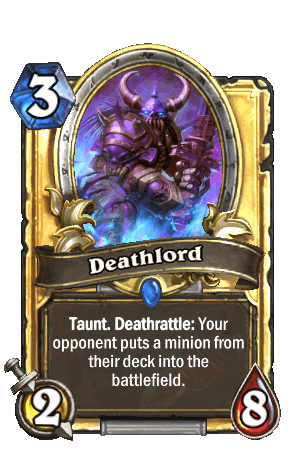

This is my guide to playing the beauty that is a terrible Reno Deck. It is not really consistent and I'm stuck at rank 19 because of it, however the games I have played have been some of the greatest comebacks and overkills I've ever seen. Whether its Unstable Portal into Aviana into Golden Monkey or instant concedes after I play Reno, this is the most fun I've had in Hearthstone. So, I decided to share it and my strats with the world.
| "Kill Me" The Reno Mage | |
|---|---|
| Mana | Card Name |
| 2 | Frostbolt |
| 2 | Unstable Portal |
| 2 | Jeweled Scarab |
| 2 | Snowchugger |
| 3 | Arcane Intelect x2 |
| 3 | Forgotten Torch |
| 3 | Ice Barrier |
| 3 | Mirror Image |
| 3 | Argent Horserider |
| 3 | Coldlight Oracle |
| 3 | Deathlord |
| 3 | Shade of Naxxramas |
| 3 | Shattered Sun Cleric |
| 4 | Fireball |
| 2 | Unstable Portal |
| 4 | Polymorph |
| 4 | Elise Starseeker |
| 4 | Piloted Shredder |
| 4 | Sen'jin Sheildmasta |
| 5 | Azure Drake x2 |
| 5 | Ethereal Conjurer |
| 5 | Loatheb |
| 5 | Sludge Belcher |
| 5 | Summoning Stone |
| 6 | Reno Jackson |
| 6 | Sunwalker |
| 7 | Flamestrike |
The trick to this game is to maintain early board control so you have room to play your draw cards. This is to get more answers to threats and take the duplicates out of your deck. Typically, winning games will result in you out lasting your opponent until you get one of the two finisher cards. You're waiting to play a Summoning Stone under a taunt or the glorious Golden Monkey. While typically Summoning Stone is a piece of hot steaming garbage but, Reno Jackson buys you enough time to lose tempo early game so you can play it. This results in DOUBLE the board control as you generate huge minions while you kill your opponent's. Elise Starseeker is normally useless as well but the high amount of card draw makes it fairly consistent. Aggresive decks that play alot of cards fare terribly in a matchup but slower ones like control warrior don't provide a lot of opportunities to play spells and will eventually fatigue you out.
Your starting hand is very important when playing this type of deck. The cards to always keep are...